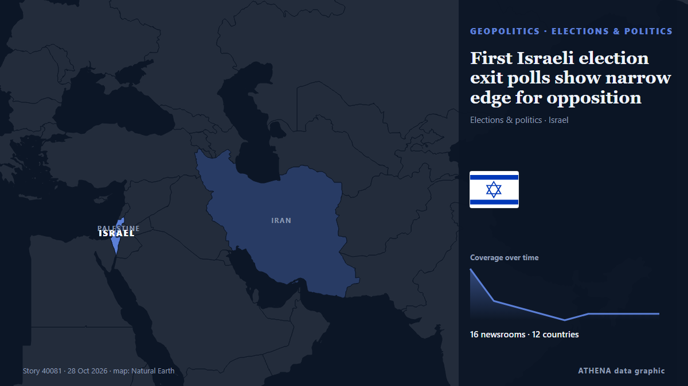

First Israeli election exit polls show narrow edge for opposition

The opposition bloc is projected to win 52 or 53 seats, while Benjamin Netanyahu’s bloc is set to take 50, although his Likud would be the largest single party in parliament. von Free Malaysia Today
Unabhängig gemeldet von 16 Medien in 12 Ländern seit dem 27. Okt., zuerst von Euractiv; die Berichterstattung ist abgeklungen. ATHENA stuft das Risiko als niedrig ein (1.3/10), vor allem wegen der Schwere des beschriebenen Schadens und seiner geografischen und sektoralen Reichweite. Die Konfidenz liegt bei 90 % (hoch): 16 Medien bestätigen es unabhängig, bei einer mittleren Verlässlichkeit der Quellen von 78 %.
Warum es wichtig ist: Sicherheits- und diplomatische Entwicklungen können Bündnisse, Handel und Märkte weit über die direkt beteiligten Länder hinaus verschieben.
Was sich geändert hat: 18 neue Berichte von 15 Redaktionen in den 24 Stunden bis 28. Okt..
Schlagzeilen werden auf Englisch angezeigt, wie veröffentlicht.
Auf einen Blick
Ausgewählt, bewertet und geschrieben nach der veröffentlichten Methodik von ATHENA. Kein Redakteur greift in einzelne Ereignisse ein. So entsteht ATHENA ›
| 27 Oct 20:49 UTC | 8 |
|---|---|
| 27 Oct 21:49 UTC | 3 |
| 27 Oct 22:49 UTC | 2 |
| 27 Oct 23:49 UTC | 1 |
| 28 Oct 00:49 UTC | 0 |
| 28 Oct 01:49 UTC | 1 |
| 28 Oct 02:49 UTC | 1 |
| 28 Oct 03:49 UTC | 1 |
| 28 Oct 04:49 UTC | 1 |
| 27 Oct 21:26 UTC | 0.0 |
|---|---|
| 27 Oct 21:43 UTC | 1.0 |
| 28 Oct 05:46 UTC | 1.3 |
Warum diese Zahlen
Bedeutung
Risiko
Konfidenz
Die Berichterstattung – wer berichtete, und wann
Schlagzeile wie veröffentlicht · öffnet das Original- Euractiv · Belgien · BelgiumNetanyahu and rival each claim mandate after tight Israel election
- Free Malaysia Today · MalaysiaFirst Israeli election exit polls show narrow edge for opposition
- The New Arab · INTIsrael opposition holds narrow edge over Netanyahu, polls show
- Hespress English · Marokko · MoroccoIsrael opposition holds narrow edge over Netanyahu in first projections
- NDTV · Indien · IndiaNetanyahu Lacks Majority, Israel Opposition Has Edge, Show 1st Exit Polls
- Channels TV · NigeriaFirst Israeli Election Exit Polls Show Narrow Edge For Opposition
- Jamaica Observer · Jamaika · JamaicaIsrael opposition holds narrow edge over Netanyahu in first projections
- France 24 English · Frankreich · FranceIsrael: First exit polls show no clear winner, Arab parties make gains
- Middle East Eye · INTIsraeli exit polls show huge Palestinian gains block Netanyahu from forming government
- Kyiv Post · UkraineIsrael Election: Four Scenarios as Opposition Edges Netanyahu but Falls Short of Majority
- The Guardian · Vereinigtes Königreich · United KingdomRise of Palestinian parties in Knesset will redraw Israel’s political landscape
- France 24 English · Frankreich · FranceIsrael election: Netanyahu and Eisenkot battle to form government after deadlock
- Euronews English · Frankreich · FranceIsrael: opposition supporters celebrate narrow lead in exit polls
- Jamaica Observer · Jamaika · JamaicaNew Israeli TV exit polls show opposition, Netanyahu blocs even
- RTÉ News · Irland · IrelandIsraeli election 'stolen' by Arab parties, says Likud
- Al Jazeera English · Katar · QatarFive key takeaways from Israel’s parliamentary elections
- Dawn · PakistanNetanyahu and rival each claim mandate after tight Israel election
- Dawn · PakistanNetanyahu, rival Eisenkot both vow to form government after inconclusive Israeli election